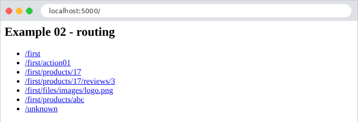
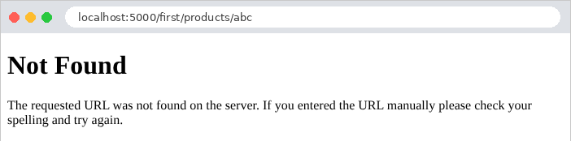
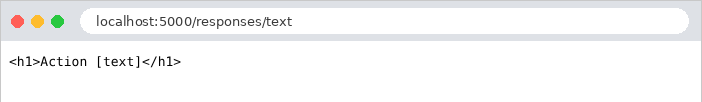
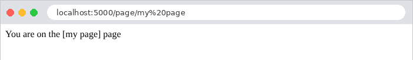

2. Acciones, enrutamiento, respuestas
Este capítulo examina el recorrido de una solicitud, desde el navegador hasta la acción que la procesa, y la respuesta que esa acción devuelve. Las vistas no se presentarán hasta el capítulo 4: aquí, las acciones devuelven texto o JSON directamente.
2.1. Ejemplo 01: la estructura de una aplicación Flask
El primer ejemplo es la aplicación [Flask] más pequeña posible: un solo archivo.
2.1.1. El archivo app.py
Analicemos este código:
- línea 2: importa la clase [Flask] del paquete [flask], instalado en el entorno virtual por [pip]. En [Python], un archivo llamado [.py] es un módulo, y un módulo solo usa los nombres que ha importado o definido él mismo (aparte de las funciones integradas del lenguaje, como [print] o [len]);
- línea 6: la aplicación, un objeto de la clase [Flask]. Recibe las solicitudes y elige la función que procesa cada una. El parámetro es el nombre del módulo actual, que [Python] guarda en la variable [__name__]: [Flask] lo usa para ubicar la carpeta de la aplicación, donde buscará más adelante las vistas (carpeta [templates]) y los archivos estáticos (carpeta [static]);
- línea 10: [@app.get("/")] es un decorador. Un decorador se escribe [@expression], inmediatamente antes de la definición de una función (o de una clase); [Python] llama a la expresión con la función como parámetro cuando ejecuta la definición. Aquí, [app.get("/")] registra la función [index] en la aplicación: manejará las solicitudes de [GET /]. Esto es el enrutamiento. Una función asociada a una ruta de esta manera es una acción (la documentación de [Flask] la llama función de vista; vea la introducción);
- líneas 11 a 13: la acción devuelve una cadena. El valor devuelto por una acción es la respuesta que se envía al navegador: [Flask] la coloca en el cuerpo de la respuesta HTTP. Por convención, los nombres de las funciones ([Python]) se escriben en minúsculas, con las palabras separadas por guiones bajos ([action01_post]);
- línea 17: cuando se ejecuta el propio archivo ([python app.py]), [Python] asigna el valor ["__main__"] a la variable [__name__]; cuando otro módulo importa el módulo, se le asigna el nombre del módulo (["app"]). Esta prueba, muy común en [Python], reserva por tanto el resto del código para cuando el archivo se inicia directamente;
- línea 21: [app.run] inicia el [Werkzeug] servidor de desarrollo, que escucha las solicitudes en el puerto 5000 de la máquina (5000 es el valor predeterminado) hasta que se lo detiene con [Ctrl-C]. [debug=True] activa el modo de depuración: el servidor vigila los archivos de la aplicación y la reinicia en cuanto se modifica uno; una excepción no controlada muestra una página de depuración (vea el ejemplo 03). Este modo está pensado para el desarrollo, y solo para el desarrollo: la página de depuración permite ejecutar código [Python] en el servidor.
2.1.2. Ejecución
En una ventana de terminal abierta en la carpeta [01-structure], con el entorno virtual de los ejemplos activado, escriba [python app.py]. [Flask] muestra sus mensajes de inicio:
Los mensajes indican el nombre de la aplicación, el modo de depuración, la dirección de escucha y el puerto. [127.0.0.1] es la dirección de la propia máquina ([localhost]): el servidor solo acepta solicitudes de esta máquina, lo cual es adecuado para el desarrollo ([app.run(host="0.0.0.0")] lo abriría a otras máquinas de la red). La línea [Restarting with stat] indica el mecanismo de recarga automática: el proceso iniciado por [python app.py] se limita a vigilar los archivos; inicia la aplicación en un proceso aparte, que reinicia cada vez que hay un cambio. El “PIN” protege la consola [Python] de la página de depuración.
Hay una segunda forma de iniciar una aplicación: el comando [flask], instalado junto con [Flask] en el entorno virtual:
La opción [--app] indica el módulo de la aplicación ([app], es decir, el archivo [app.py]), [run] inicia el servidor de desarrollo y [--debug] activa el modo de depuración; [--port 5001] cambiaría el puerto. El propio comando localiza, dentro del módulo, el objeto [Flask] llamado [app] (o, como veremos en el ejemplo 02, una función llamada [create_app]). Con esto, la prueba [if __name__ == "__main__"] ya no es necesaria. Los ejemplos usan [python app.py], que es más fácil de recordar; el caso de estudio hará lo mismo.
Solicitemos la URL [http://localhost:5000/] con un navegador:

y luego con [curl]. La opción [-i] también muestra los encabezados HTTP de la respuesta:
La primera línea de la respuesta contiene la versión del protocolo, el código de estado (200) y su etiqueta ([OK]). Siguen los encabezados: el nombre del servidor, la fecha, el tipo de contenido, la longitud del contenido en bytes y [Connection: close] (el servidor de desarrollo cierra la conexión después de cada respuesta). Una línea en blanco separa los encabezados del cuerpo de la respuesta. En el resto de este documento ya no incluiremos los encabezados [Server], [Date] y [Connection], ya que no cambian.
El encabezado [Content-Type: text/html; charset=utf-8] indica que la respuesta está en formato HTML, cuyos caracteres están codificados en UTF-8. Es la codificación predeterminada ([Flask]) para cualquier cadena que devuelva una acción: el navegador interpreta entonces la cadena como HTML (aquí, al no haber etiquetas, se muestra tal cual). El ejemplo 03 mostrará cómo especificar un tipo de contenido distinto.
Por cada solicitud, la consola del servidor muestra una línea de log: la dirección del cliente, la fecha, la solicitud y el código de respuesta.
2.2. Ejemplo 02: enrutamiento
El enrutamiento asocia una URL y un método (HTTP, GET, POST...) con una acción. El ejemplo 02 organiza estas acciones en dos archivos:
La carpeta [controllers] es un [Python] paquete (vea la introducción). Cada uno de estos dos módulos define un blueprint: un grupo de rutas, que la aplicación registra luego. Es el equivalente en [Flask] de las clases de controlador de [Spring MVC] o [ASP.NET Core MVC].
2.2.1. La aplicación: app.py
- Líneas 4 y 5: importan los dos blueprints, los objetos [home] and [first], de los módulos [controllers/home.py] and [controllers/first.py];
- Líneas 9 a 14: la aplicación ya no es una variable del módulo creada al importarlo; la construye una función llamada *factory* (fábrica). Este es el enfoque que recomienda la documentación de [Flask], y que seguirán todos los ejemplos siguientes: la configuración de la aplicación se concentra en un solo lugar y se pueden crear varias aplicaciones con configuraciones distintas (para las pruebas, por ejemplo). El comando [flask --app app run] lo reconoce: si no existe una variable [app], llama a la función [create_app] del módulo;
- líneas 12 y 13: cada blueprint se registra en la aplicación; sus rutas pasan a ser las de la aplicación;
- línea 18: se construye la aplicación y luego se inicia el servidor.
2.2.2. El blueprint "home": controllers/home.py
- línea 6: el blueprint. Su primer parámetro es su nombre, [home]: servirá para identificar sus acciones ([home.index], vea el ejemplo 04). El segundo parámetro, como en la aplicación, es el nombre del módulo;
- línea 11: un blueprint tiene los mismos decoradores que la aplicación: la acción [index] procesa [GET /];
- líneas 13 a 23: una cadena delimitada por comillas triples puede ocupar varias líneas y contener comillas. La acción devuelve HTML, que se envía con el tipo [text/html] (vea el ejemplo 01).
La acción [index] devuelve así una página HTML que contiene enlaces a las acciones del otro blueprint:

2.2.3. El primer blueprint: controllers/first.py
Analicemos este código:
- línea 5: el parámetro [url_prefix] fija el prefijo común a todas las rutas del blueprint: sus acciones procesan las rutas URL que comienzan con [/first];
- líneas 9 y 10: la ruta [""] designa el propio prefijo: la acción [index] procesa [GET /first]. La URL de una acción es la concatenación del prefijo del blueprint y la ruta de su declaración. El nombre de la acción ([index]) puede ser el mismo que en otro blueprint: [Flask] las distingue por el nombre del blueprint ([first.index], [home.index]);
- líneas 15 y 16: la acción [action01] procesa [GET /first/action01];
- líneas 21 y 22: la misma ruta, pero para el método POST: el decorador [post] reemplaza a [get]. También existen [put], [delete] y [patch], así como el decorador general [route], que acepta una lista de métodos: [@first.route("/action01", methods=["GET", "POST"])]. Dentro de un mismo módulo, dos funciones no pueden tener el mismo nombre (la segunda reemplazaría a la primera): de ahí el nombre [action01_post];
- líneas 28 a 30: [<int:id>] es una variable de ruta: este segmento de la URL puede tomar varios valores. [int] es un convertidor: el segmento debe estar formado por dígitos; de lo contrario, la ruta no coincide; su valor se convierte en un entero y luego se pasa al parámetro de la acción que tiene el mismo nombre, [id]. Para [/first/products/17], [id] es igual al número 17. Esto es el enlace de datos (*data binding*), que el próximo capítulo examinará en detalle. Sin convertidor ([<id>]), la variable acepta cualquier texto sin barra y sigue siendo una cadena. [Werkzeug] también ofrece los convertidores [float], [uuid] y [path], y el ejemplo 12 mostrará cómo escribir uno propio;
- línea 30: una f-string (el prefijo [f]): cada expresión entre llaves se evalúa y su valor se inserta en el texto;
- líneas 34 a 36: dos variables de ruta, pasadas como dos parámetros a la acción;
- líneas 41 a 43: el convertidor [path] acepta cualquier final de URL, incluido [/].
2.2.4. Ejecución
Estas son las respuestas a algunas consultas:
El texto tiene 30 caracteres, y la respuesta también mide 30 bytes: en UTF-8, cada uno de estos caracteres (ASCII) ocupa un byte.
Para enviar una solicitud POST, use la opción [-X POST] de [curl]:
Un método HTTP que ninguna acción maneja para esta ruta produce un error 405 ([Method Not Allowed]). El encabezado [Allow] enumera los métodos aceptados; [Flask] agrega [HEAD] (la misma solicitud que GET, sin el cuerpo de la respuesta) y [OPTIONS] (la lista de métodos aceptados), que procesa por sí mismo para cualquier ruta GET:
Por último, una URL que ninguna ruta maneja produce un error 404. Es también el caso de un identificador que no es un entero: ninguna ruta coincide con [/first/products/abc].
Las respuestas de error de [Flask] (en realidad, de [Werkzeug]) son páginas HTML breves, en inglés. En un navegador:

El capítulo 7 mostrará cómo reemplazarlas por páginas propias de la aplicación. Observe también que [Flask] distingue [/first] from [/first/]: esta última URL también produce un error 404, porque ninguna ruta termina con una barra diagonal. A la inversa, una ruta declarada con una barra final ([@first.get("/list/")]) también acepta la URL sin barra, mediante una redirección.
El comando [flask routes], ejecutado en la carpeta del ejemplo, enumera todas las rutas de la aplicación:
La columna [Endpoint] enumera el nombre de cada ruta: el nombre del blueprint, un punto y el nombre de la función. La última ruta, [static], la crea [Flask] mismo: sirve los archivos de la carpeta [static] de la aplicación (vea el ejemplo 15).
2.3. Ejemplo 03: respuestas de una acción
Lo que devuelve una acción determina la respuesta HTTP. El ejemplo 03 repasa los casos principales. El archivo [app.py]:
- Líneas 11 y 12: dos ajustes del proveedor JSON ([app.json]) de la aplicación, el objeto que convierte los objetos [Python] en JSON. De forma predeterminada, escribe los caracteres no ASCII como secuencias de escape ([é] se convierte en [é], lo cual es JSON válido pero poco legible), y ordena alfabéticamente las claves de los diccionarios. Conservamos los caracteres tal cual y las claves en el orden en que las escribió la acción.
El archivo [controllers/responses.py]:
Comentemos este código:
- Líneas 13 a 15: la clase [Response] representa una respuesta HTTP completa. La acción la construye por sí misma: el cuerpo y el tipo ([mimetype]), en este caso [text/plain] (texto sin formato). El navegador no interpretará las etiquetas;
- líneas 19 a 21: la misma cadena, devuelta sola: [Flask] la envía con el tipo [text/html], y el navegador la interpreta;
- líneas 25 a 29: una dataclass, una clase en la que solo se declaran los campos y sus tipos; el decorador [@dataclass] escribe por sí mismo el constructor ([Person("Martin", "Jean", 42)]), la representación textual y la comparación de objetos. El ejemplo 06 volverá sobre esto;
- líneas 33 a 35: la función [jsonify] convierte su parámetro a JSON y genera una respuesta de tipo [application/json]. El proveedor JSON de [Flask] puede convertir diccionarios, listas, cadenas, números, booleanos, [None] (que se convierte en [null]), así como dataclasses, fechas y números [Decimal] (vea el ejemplo 06);
- líneas 39 a 41: aún más simple: una acción que devuelve un diccionario (o una lista, líneas 45 a 47) produce una respuesta JSON, sin llamar a [jsonify]. En cambio, una dataclass debe pasar por [jsonify]: si se devolviera sola, provocaría un error (“The view function did not return a valid response”);
- líneas 51 a 53: una acción puede devolver una tupla [(content, code)]: el código de estado 201 ([Created]) reemplaza al código de estado 200. Una tupla también puede contener encabezados: [(content, code, {"X-Example": "03"})];
- líneas 57 a 59: el código 204 ([No Content]) significa “nada que mostrar”: la respuesta no tiene cuerpo;
- líneas 64 a 68: una acción asíncrona, declarada con [async def]. La palabra clave [await] suspende la corrutina mientras espera ([asyncio.sleep]), sin bloquear el programa. [Flask] ejecuta la acción en un bucle de eventos creado para la solicitud y espera su resultado: esto es útil para lanzar varias esperas en paralelo (varias llamadas a servicios web, por ejemplo), pero no vuelve asíncrono al propio [Flask]. Es necesario instalar la extensión [[async]] de [Flask] (vea [requirements.txt]);
- líneas 72 a 74: un error “esperado”: la tupla [(content, 404)] devuelve una respuesta 404 ([Not Found]), con un cuerpo (JSON) elegido por la acción;
- líneas 78 a 80: el mismo error, generado por la función [abort]. [abort] no devuelve nada: lanza una excepción ([NotFound], para el código 404), que termina la acción; [Flask] la convierte en una respuesta de error, con el mensaje indicado como segundo parámetro. Es la forma más habitual de terminar una acción por un error, incluso en lo profundo de una función llamada por la acción;
- líneas 84 a 86: un error “inesperado” (una excepción que nadie maneja) produce una respuesta 500 ([Internal Server Error]).
En un navegador, la diferencia entre [text/plain] y [text/html] es visible:


Estas son las respuestas de las demás acciones:
La dataclass se ha convertido en el objeto JSON, con un campo por atributo. En modo de depuración, el JSON se muestra en varias líneas, con sangría; sin modo de depuración, cabe en una sola línea ([{"last_name":"Martin","first_name":"Jean","age":42}]). La acción [/responses/dictionary] produce exactamente el mismo resultado.
La respuesta de [abort] es la página de error estándar de [Werkzeug], con nuestro mensaje (insertado en la página después de escaparlo: el texto insertado en HTML no debe poder introducir etiquetas; volveremos sobre esto).
Queda la excepción no controlada. En modo de depuración, el navegador muestra la página del [Werkzeug] depurador: el tipo y el mensaje de la excepción, seguidos de la pila de llamadas (la lista de funciones que se estaban ejecutando en el momento del error), de la más antigua a la más reciente, con la línea de código correspondiente en cada caso:

La última función de la pila es nuestra acción, [exception], en la línea 86 del archivo [responses.py]. Al hacer clic en una de las líneas de la pila, incluso se puede abrir una consola [Python] en el contexto de esa función, después de ingresar el PIN que se mostró al iniciar: por eso el modo de depuración nunca debe activarse en un servidor accesible para otras personas. La consola del servidor también muestra la pila de llamadas (aquí incluimos solo el final):
Sin modo de depuración ([app.run(port=5000)]), la misma solicitud produce una breve página de error 500 en inglés que no revela nada del código (“Internal Server Error. The server encountered an internal error and was unable to complete your request...”); la pila de llamadas solo se escribe en la consola del servidor. El capítulo 7 mostrará cómo mostrar una página de error propia de la aplicación.
2.4. Ejemplo 04: redirecciones
Una redirección es una respuesta que indica al navegador que obtenga otra URL: un código 3xx y el encabezado [Location], que contiene la nueva dirección. El navegador envía de inmediato una segunda solicitud a esa dirección. El archivo [controllers/redirects.py]:
- líneas 8 a 10: la función [redirect] genera una respuesta de redirección a la dirección indicada. El código de estado 301 ([Moved Permanently]) indica que la página ha cambiado de dirección de forma permanente: el navegador (y los motores de búsqueda) pueden guardar en caché la nueva;
- líneas 20 a 22: sin el parámetro [code], [redirect] produce una redirección temporal con el código de estado 302 ([Found]). La dirección se calcula concatenando fragmentos de texto, lo que plantea un problema que examinaremos;
- líneas 27 a 29: la función [url_for] genera la URL de una acción, identificada por su nombre (["redirects.page"]: el blueprint, un punto, la función), en lugar de por su ruta. Sus parámetros con nombre proporcionan las variables de ruta (aquí, [name]), codificadas correctamente para una URL. Si alguna vez se cambia la ruta de [page], las llamadas a [url_for] la seguirán automáticamente;
- líneas 38 a 40: una redirección a otro sitio.
Las respuestas, con [curl] (que, sin opciones, no sigue las redirecciones):
La respuesta incluye además un pequeño cuerpo HTML, para un cliente que no siguiera las redirecciones. La opción [-L] de [curl] sigue la redirección, igual que lo haría un navegador:
Comparemos ahora las dos redirecciones calculadas, con un destino que contiene un signo de interrogación, codificado como [%3F] en la URL (un [?] sin codificar iniciaría los parámetros de la URL):
[Flask] decodificó la variable de ruta antes de procesarla: [destination] es igual a [a?b]. La primera acción la pega tal cual en la dirección: [/page/a?b], que el navegador interpreta como la ruta [/page/a] seguida del parámetro [b]. La segunda pasa por [url_for], que la codifica de nuevo: [/page/a%3Fb]. Siguiendo las redirecciones:
Solo la segunda lleva a la página correcta. De ahí la regla: una dirección que contiene el valor de una variable se genera con [url_for], nunca concatenando cadenas. En el navegador solo se ve la página final; la barra de direcciones muestra la nueva URL:

Existen otros dos códigos de redirección: 303 ([See Other]) y 307 ([Temporary Redirect]), que se obtienen con [redirect(url, code=303)]. Después de una solicitud POST, los códigos 302 y 303 hacen que el navegador envíe una solicitud GET a la nueva dirección, mientras que el 307 (y el 308, su versión permanente) hacen que repita la solicitud POST. El ejemplo 20 usará una redirección después de un POST.
2.5. Ejemplo 05: los objetos de solicitud y de respuesta
Hasta ahora, las acciones solo recibían variables de ruta y devolvían un valor que [Flask] convertía en una respuesta. Una acción también puede acceder a la solicitud actual y construir ella misma la respuesta. El archivo [controllers/http.py]:
- línea 4: importación del objeto [request]. En [Flask], la solicitud actual no es un parámetro de la acción: es un objeto global, [request], que se importa del paquete [flask]. ¿Cómo puede un objeto global referirse a la solicitud actual, si el servidor procesa varias solicitudes simultáneamente en varios hilos (hilos de ejecución en paralelo)? [request] actúa como un proxy: cada vez que se usa, reenvía la operación a la solicitud del hilo actual. [Flask] llama a esto el contexto de la solicitud: mientras se procesa una solicitud, [request] se refiere a esa solicitud en particular. Fuera del procesamiento de una solicitud, usarlo provoca un error (“Working outside of request context”);
- líneas 14 a 20: algunas propiedades de la solicitud: su método HTTP, su ruta, sus parámetros sin procesar (la parte de la URL que sigue a [?], en forma de bytes, que [decode] convierte en texto), sus encabezados ([request.headers], un diccionario, cuyo método [get] devuelve [None] para un encabezado ausente) y la dirección IP del cliente. Los parámetros, uno por uno, se tratarán en el próximo capítulo;
- líneas 26 a 30: la función [make_response] construye el objeto de respuesta (un [Response]) a partir de lo que la acción devolvería (aquí, una cadena); la acción puede entonces modificarlo antes de devolverlo. Se le agrega un encabezado [X-Example] (por convención, los encabezados propios de una aplicación suelen comenzar con [X-]);
- líneas 34 a 37: la respuesta “construida a mano”: el cuerpo, el código de estado y el tipo;
- líneas 42 a 50: una respuesta enviada por fragmentos (*streaming*). La función [chunks] es un generador: cada [yield] produce un fragmento del cuerpo. Como la respuesta se construye con un generador, su longitud no se conoce de antemano: el servidor envía el código de estado y los encabezados, y luego cada fragmento en cuanto se produce. Esto es útil para una respuesta muy larga, generada poco a poco. Pero una vez enviado el primer fragmento, el código de estado ya no puede cambiar: aquí, el generador lanza una excepción después del primer fragmento. Este es el error que hay que evitar: una respuesta que ya comenzó no puede convertirse en una respuesta de error.
Respuestas:
(Las comillas alrededor de "URL" impiden que el terminal interprete el carácter "[&]"). En un navegador, el encabezado [User-Agent] es el del navegador; [Chrome] muestra el JSON sin procesar, con una casilla que lo indenta:

El encabezado [Transfer-Encoding: chunked] reemplaza a [Content-Length]: el cuerpo llega en fragmentos, cada uno precedido por su longitud. Después de un segundo, la respuesta se interrumpe: [curl] recibió un código de estado 200 y un cuerpo truncado, sin ninguna forma de saber que ocurrió un error. Solo la consola del servidor lo indica:
2.6. Ejemplo 06: servicios compartidos e inyección de dependencias
Una acción no debe contener la lógica de la aplicación; la delega en servicios, objetos que saben realizar una tarea específica (leer productos, calcular un carrito de compras, etc.). A menudo varias acciones usan el mismo servicio. En [Spring] o [ASP.NET Core], un contenedor de inyección de dependencias crea los servicios y se los proporciona automáticamente a quienes los necesitan. [Flask] no tiene contenedor: la fábrica de la aplicación crea los servicios y las acciones se los piden a la aplicación. El ejemplo 06 organiza su código por dominio (productos, clientes) en lugar de por tipo (controladores, modelos):
2.6.1. El producto
- Línea 8: una dataclass (vea el ejemplo 03). Con [frozen=True], el objeto es inmutable: sus campos los fija el constructor, y cualquier intento de modificarlos ([p.price = 2]) lanza una excepción. Un objeto inmutable puede compartirse sin riesgo entre varias solicitudes;
- líneas 10 a 12: los campos, con sus tipos. [Python] no verifica los tipos en tiempo de ejecución: son anotaciones que leen las herramientas de análisis (como la de [Visual Studio Code]) y ciertas bibliotecas ([Pydantic], que se tratará en el próximo capítulo). El precio es un [Decimal], un número decimal exacto: un [float] no puede representar con exactitud 0.1 ni 3.2 (en binario, estos números tienen infinitas cifras), y una suma de precios en [float] puede dar 5.500000000000001.
2.6.2. El contrato del servicio: service.py
- Líneas 11 a 18: el contrato del servicio: lo que puede hacer, sin especificar cómo. En [Python], un contrato se define mediante una clase abstracta: una clase que hereda de [ABC] ([Abstract Base Class]) y cuyos métodos marcados con [@abstractmethod] no tienen cuerpo (los tres puntos [...] sirven de cuerpo vacío). No se puede crear un objeto de esta clase; una subclase debe redefinir todos sus métodos abstractos. Esto equivale a las interfaces de [Java] y [C#];
- línea 14: la anotación del tipo que devuelve el método (después de [->]): una lista de productos. [self] es el objeto sobre el que se llama al método (el equivalente de [this] en [Java]), que siempre figura como primer parámetro;
- línea 18: [Product | None]: un producto, o [None] si no existe;
- líneas 23 y 24: la función que proporciona el servicio a las acciones. [current_app] es, igual que [request], un proxy: se refiere a la aplicación que procesa la solicitud actual. [app.extensions] es un diccionario que [Flask] pone a disposición de las extensiones (las bibliotecas que se agregan a [Flask]) para que guarden allí sus objetos; lo usamos para nuestros propios servicios. La función también indica el tipo del servicio ([-> ProductsService]): [Visual Studio Code] puede entonces ofrecer sus métodos.
2.6.3. La implementación: in_memory_service.py
- línea 8: la clase hereda el contrato y redefine sus dos métodos;
- líneas 10 a 15: [__init__] es el constructor de la clase. Guarda los productos en el atributo [_products] del objeto; el guion bajo inicial indica, por convención, un atributo privado que el código externo a la clase no debe usar. Los productos están en una tupla (entre paréntesis): una secuencia inmutable. El precio se construye a partir de una cadena ([Decimal("1.5")]): construido a partir del [float] 1.5, heredaría sus imprecisiones;
- líneas 18 y 19: el método devuelve una lista nueva, una copia de la tupla: quien llama puede modificarla sin afectar los datos del servicio;
- líneas 21 a 23: [(p for p in self._products if p.id == id)] es una expresión generadora: produce, uno por uno, los productos cuyo ID coincide con el solicitado. [next] devuelve el primer elemento producto, o el valor predeterminado, [None], si no hay ninguno.
2.6.4. El blueprint de productos: controller.py
- Línea 4: el blueprint solo conoce el contrato del servicio (el módulo [service]), no su implementación: ignora que los productos están en memoria;
- líneas 10 a 12: la acción le pide el servicio a la aplicación y luego le delega el trabajo. [jsonify] convierte la lista de dataclasses en un arreglo JSON;
- líneas 16 a 20: un producto desconocido devuelve una respuesta 404, con un mensaje en JSON.
2.6.5. El blueprint de clientes: controller.py
- líneas 14 a 17: el contenido del carrito de compras, devuelto como JSON;
- línea 22: este blueprint usa el mismo servicio que el blueprint de productos: un único objeto compartido;
- línea 24: [sum] suma los elementos de un iterable; su parámetro [start] es el valor inicial de la suma (0 de forma predeterminada). Comenzar con [Decimal(0)] en lugar del entero 0 no es esencial (un entero y un [Decimal] se pueden sumar), pero garantiza un resultado de tipo [Decimal] incluso para un carrito de compras vacío.
2.6.6. La declaración del servicio: app.py
- Línea 17: aquí, y solo aquí, se elige la implementación del servicio. El servicio se crea una sola vez, al iniciar, y el mismo objeto atiende todas las solicitudes de todos los usuarios: es un singleton (el ámbito predeterminado de los beans de [Spring]). Para pasar a una implementación que lea de una base de datos, bastaría con cambiar esta línea: los blueprints, que solo conocen el contrato, permanecerían sin cambios. Este es todo el sentido de la inyección de dependencias, incluso implementada “a mano”: cada parte de la aplicación depende de contratos y un único lugar determina las implementaciones.
Un servicio compartido por todas las solicitudes debe poder usarse simultáneamente por varias solicitudes: el servidor de desarrollo procesa cada solicitud en su propio hilo. Esto no plantea ningún problema: el servicio se limita a leer datos que nunca cambian. El ejemplo 20 mostrará un servicio cuyos datos cambian y las precauciones que esto exige.
2.6.7. Ejecución
Los precios se han convertido en cadenas (["1.5"]): JSON solo tiene un tipo numérico, que la mayoría de los programas interpretan como un número de punto flotante; por eso el proveedor JSON de [Flask] convierte un [Decimal] en una cadena para conservar su precisión.